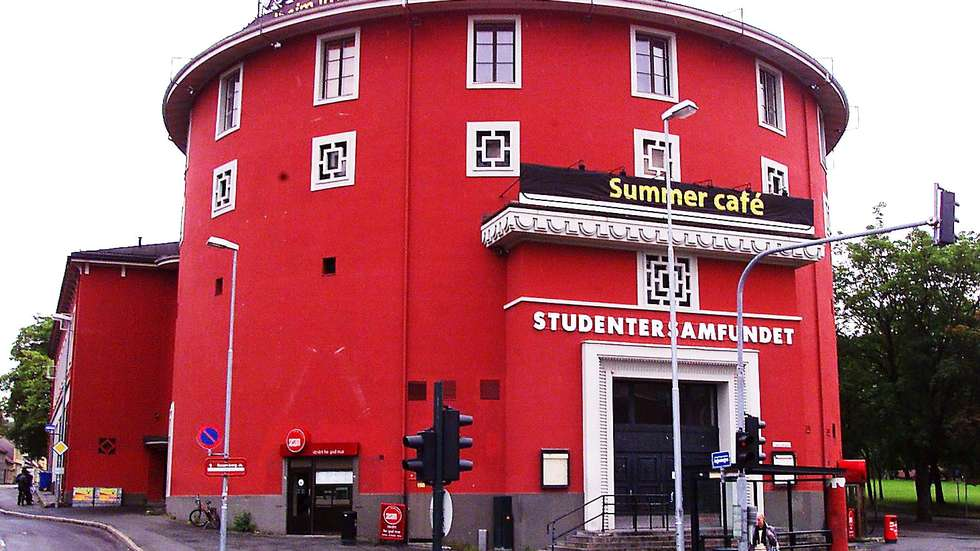
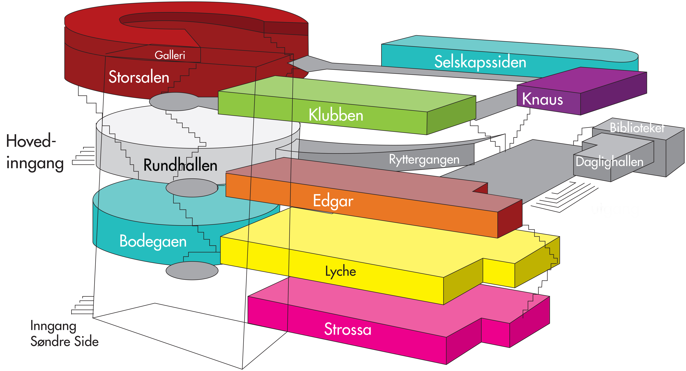

Studentersamfundet

Studentersamfundet i Trondhjem er en organisasjon for studenter i Trondheim som eies og drives av sine rundt 10 000 medlemmer. Formålsparagrafen vår sier at ”Studentersamfundet skal være det naturlige samlingsstedet for studenter i Trondhjem”. Vårt røde runde huser konserter, ulike kulturarrangementer, utallige barer, en kafé og en restaurant. Mest sagnomsust er Samfundsmøtene, viet til debatt om politikk og aktuelle spørsmål, eller til underholdning og moro. Samfundet har også tre av Trondheims beste konsertscener. I tillegg arrangeres Norges største kulturfestival UKA og verdens største internasjonale tematiske studentfestival ISFiT, under Studentersamfundets paraply annenhvert år.
Generelle åpningstider:
Fredag: Lokalene åpner 20:00. Storsalskonserter starter vanligvis kl 22:00.
Konserter på Knaus starter ved midnatt. Huset stenger 02:30.
Inngang på Huset er gratis for medlemmer og koster kr 40,- før 23:00, og kr 60,- etter 23:00 for ikke-medlemmer, unntatt når det er festivaler eller temafester. Inngang inkluderer Knauskonsert og andre arrangementer som ikke har egen billett.
Lørdag: Lokalene åpner 18:30. 
Samfundsmøtet begynner kl 19:00.
Storsalskonserter starter vanligvis kl 22:00. Huset stenger 02:30.
Inngang på Huset er gratis for medlemmer unntatt når det er festivaler eller temafester.
For ikke-medlemmer koster det kr 40,- før kl. 23:00 og 80,- etter kl. 23:00.
Inngang inkluderer Samfundsmøte, Knauskonsert og andre arrangementer som ikke har egen billett.
Barer:
- Luka
- Edgar
- Lyche
- Daglighallen
- Biblioteket
- Strossa
- Storsalen
- Selskapssiden
- Rundhallen
- Knaus
- Klubben
- Bodegaen